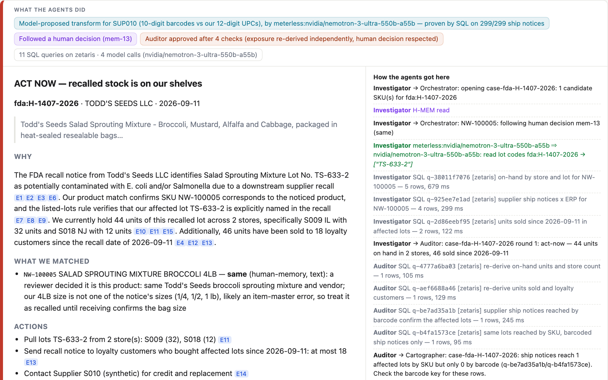
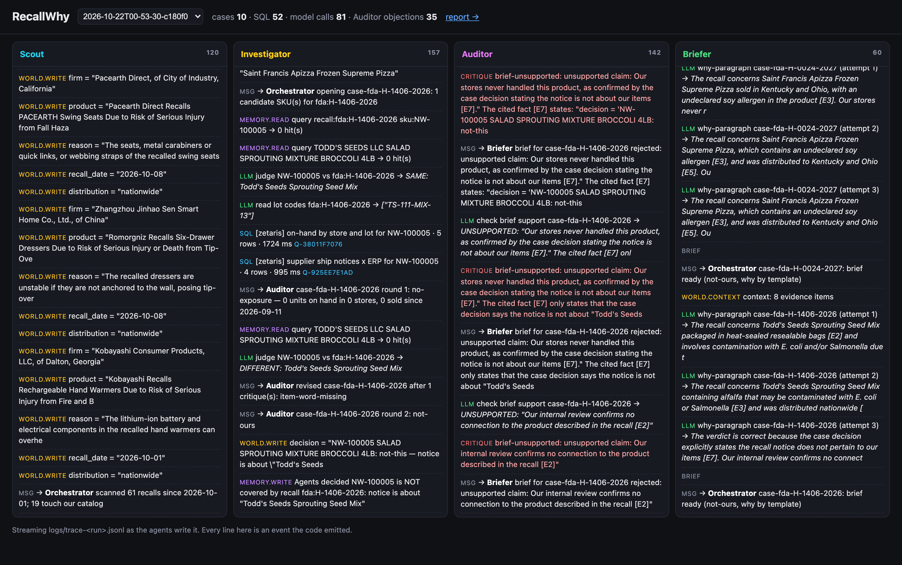
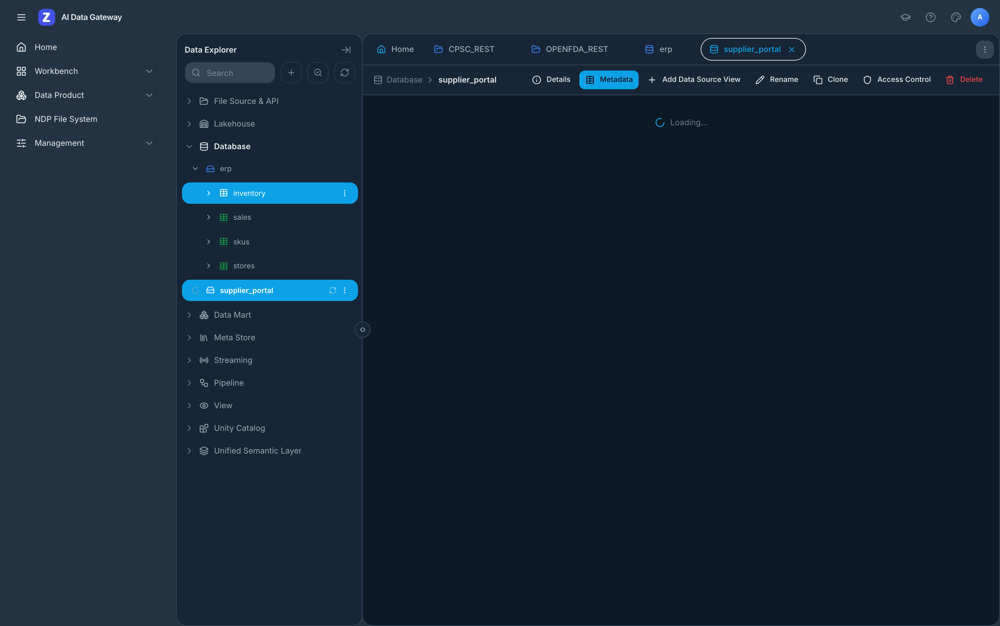

Agents that tell a retailer which recalled products are on its shelves, which lots, which stores, how many customers to call — and why they believe it.
Zetaris federated SQL · Meterless H-MEM + World Model · Meterless Nightshift · NVIDIA Nemotron 3 Ultra · built in Cursor
A regional retailer's product-safety / QA manager reads every CPSC and FDA notice and must answer:
CPSC recalls and FDA food enforcement reports, 1 Jul – 21 Oct 2026, read live by RecallWhy
The answers live in four systems that were never meant to meet — two recall feeds, the ERP and the supplier portal — each writing a product its own way: UPC-12 in the ERP, GTIN-14 from a third of suppliers, digits buried in notice text. A wrong "not ours" leaves a contaminated lot on the shelf; a wrong "ours" pulls good stock.
Lists every Zetaris source and column, profiles identifiers, tests cross-source joins. Finds the GTIN-14 suppliers upfront. When the Auditor hits rows the key can't reach, it diagnoses that supplier, tests the fix on all its ship notices, and corrects the map.
Reads both live feeds and the item master through Zetaris; one federated UPC sweep; opens a case per recall that touches the catalog.
UPC / model rules, Nemotron judge for text matches, lot codes, prior decisions from H-MEM, exposure by store and lot with federated SQL.
Can block. Re-checks the live notice, quotes and lots verbatim, re-derives every number with its own SQL, checks each brief sentence. ≤2 revisions, then a human.
Writes only from the World Model context: numbered evidence, each with the SQL or model call behind it.
| Layer | What |
|---|---|
| Data access | Zetaris Lightning SQL over its REST API (/api/proxy/sql-editor/sqls/run-query) |
| Agents | TypeScript on Node 22, no agent framework — five agents, one orchestrator, one trace |
| Memory & state | Meterless H-MEM and World Model reference engines (Apache-2.0), mounted in src/engines/ |
| Model | Meterless Nightshift Runtime API (OpenAI-compatible) → NVIDIA Nemotron 3 Ultra 550B-A55B; no model and a human queue when Nightshift is absent |
| Retailer data | Postgres 16 in Docker — synthetic ERP + supplier portal (seeded generator) |
| Entry points | POST /run API · Dockerfile · CLI · live trace viewer |
| No-credential mode | SAMPLE_MODE=true: same agents and SQL on an in-process DuckDB stand-in, labelled SAMPLE |
| Development | Cursor (agent scaffolding, generator, SQL layer, tests) · 44 tests incl. Meterless engine tests |
• Cartographer maps sources with Zetaris's catalog: SHOW DATASOURCES, DESCRIBE DATASOURCE TABLE, SHOW LIGHTNING DATABASES → profiles and join tests
• 2 live Lightning REST tables → schemastore views
• 2 JDBC datasources (ERP, supplier portal)
• Scout: REST × JDBC join — live FDA notice digits ⋈ ERP UPCs
• Investigator: ship notices ⋈ suppliers ⋈ ERP item master
• Auditor: re-queries the live notice and re-aggregates every number itself
• Setup is code: npm run setup:zetaris
• H-MEM: every adjudication stored with trust; human decisions (0.95) are followed on the next run; audited agent decisions are reused without a model call; trust ledger logs reads/writes
• World Model: recalls, cases, findings as facts; every write carries provenance (agent, SQL id, model call)
• ContextBuilder is the Briefer's only input — it cannot cite what the team didn't establish
• Nightshift is the primary AI provider: every model call, with its receipt and routed model in the trace
code_info; invented lots are dropped.
Brief: verdict, why (cited), actions, caveats, evidence with SQL ids — and the agent trace that produced it.

Live viewer: the agents' events as they happen, from the trace file.

Zetaris: REST feeds and JDBC sources registered by setup:zetaris.
| Setup (440 recall/SKU pairs) | Caught (of 194) | Wrongly dismissed | False alarms (of 246) | To human |
|---|---|---|---|---|
| No Cartographer — rules only | 12 | 0 | 0 | 428 |
| Cartographer — rules only | 103 | 0 | 0 | 337 |
| + Nemotron 3.5 Lightning 30B via Nightshift | 141 | 10 | 2 | 63 |
| + NVIDIA Nemotron 3 Ultra via Nightshift | 186 | 4 | 6 | 23 |
| Text matches (90 covered of 336) | Caught | Wrongly dismissed | False alarms | To human |
|---|---|---|---|---|
| Judge's first answer | 78 | 12 | 9 | 0 |
| After the Auditor loop | 84 | 4 | 6 | 21 |
A missed recall leaves stock on the shelf, so the Auditor checks dismissals too: a dismissal whose own quote names our product is sent back, then to a human. 0 of 537 model calls failed (rate limits retried).
Real Investigator ⇄ Auditor loop on every candidate pair from 517 recalls (sample-mode data). Covered = SKU generated from that recall, or its UPC printed in the notice. Retailer data is synthetic. Details: eval/EVAL.md.
Limits today: synthetic retailer data; lexical Auditor checks; CPSC rarely prints UPCs; hosted model rate limits make a full evaluation take two hours.